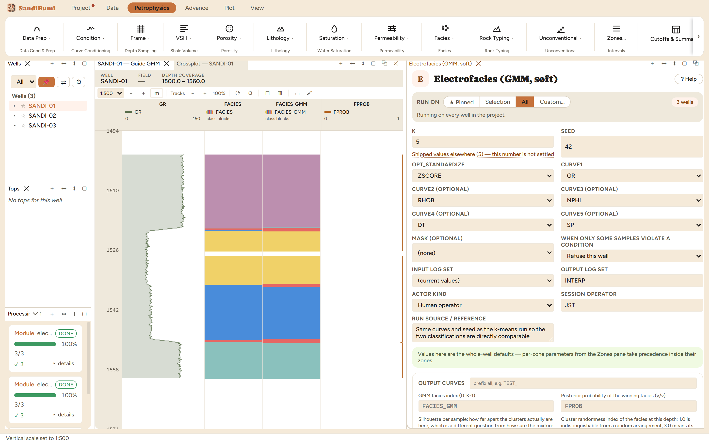
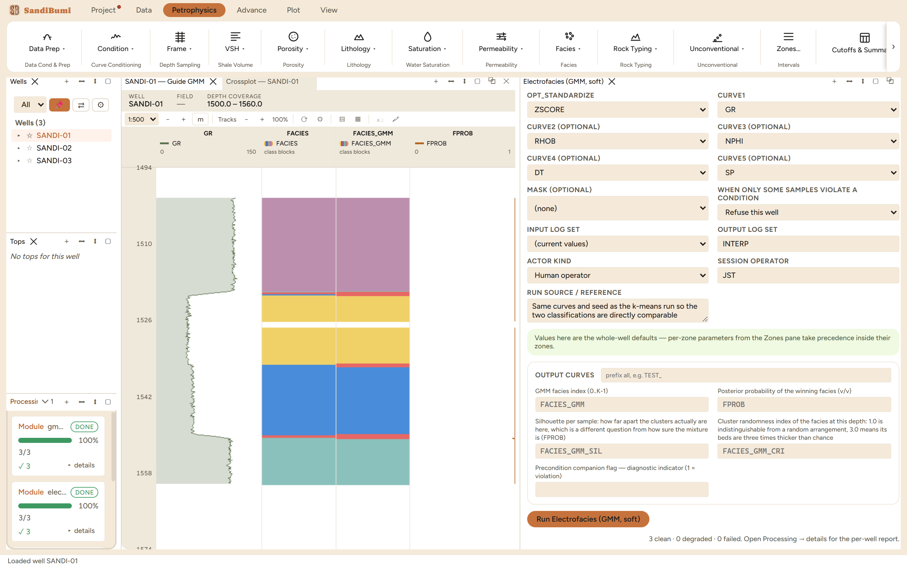

Soft electrofacies: a Gaussian mixture model fitted in the same z-scored curve space as the k-means module, writing a class curve FACIES_GMM, the posterior probability FPROB of the winning class at every sample, and the same silhouette and bed-randomness diagnostics under its own names. Reach for it when the boundaries matter: k-means assigns every sample outright, while the mixture says how sure it is, which is exactly the information a transitional interval needs.
Where k-means cuts space into cells around K centroids, a GMM fits K Gaussian components, each with its own center and covariance, and assigns each sample the component with the highest posterior probability. FPROB is that winning posterior: 1.0 deep inside a component, approaching 1/K where components genuinely overlap. Labels are ordered by the first curve's mean, the same GR-tracks-shaliness convention as k-means, so the two class curves are comparable class by class.

3 clean. The census over 1164 samples: 258 / 276 / 55 / 191 / 384 against k-means' 267 / 297 / 15 / 198 / 387, and the class GR medians (44.9 / 52.3 / 67.9 / 105.0 / 109.9 gAPI) stay monotone. The two engines agree at 1122 of 1164 samples, 96 percent, and the entire disagreement is the boundary population: the mixture grows the thin middle class from 15 to 55 samples by claiming the transitional points k-means split between its neighbours.
Now the number this module exists to teach. FPROB is uniformly confident: minimum 0.974 across every classified sample, median 1.0, not one sample below 0.8, and even at the 42 samples where the GMM disagrees with k-means its median confidence is 1.0. The silhouette tells the opposite story: 51 samples carry a negative silhouette (minimum −0.86), and they concentrate in that same middle class. Both are right, because they answer different questions. FPROB says how confidently the fitted mixture assigns a sample to the component it won; the silhouette says whether the clusters are geometrically apart at all. A confidently fitted but badly separated mixture reports high FPROB and negative silhouettes at the same depths, which is precisely what a boundary facies looks like.
